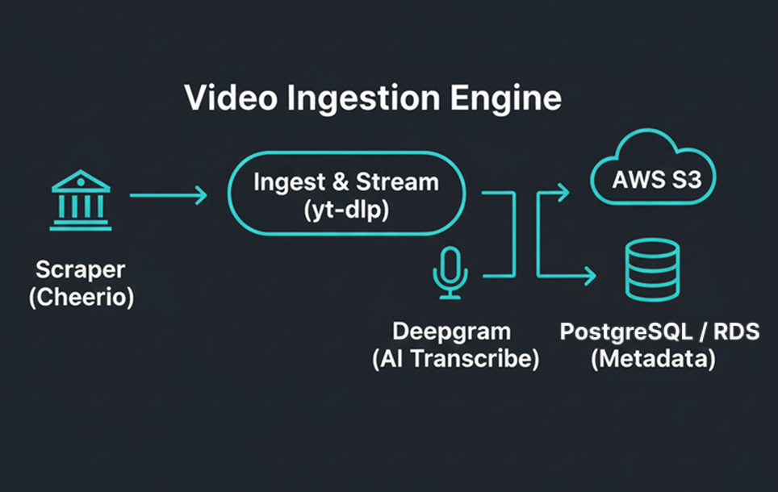
Automated pipeline for monitoring and transcribing US State legislative videos.
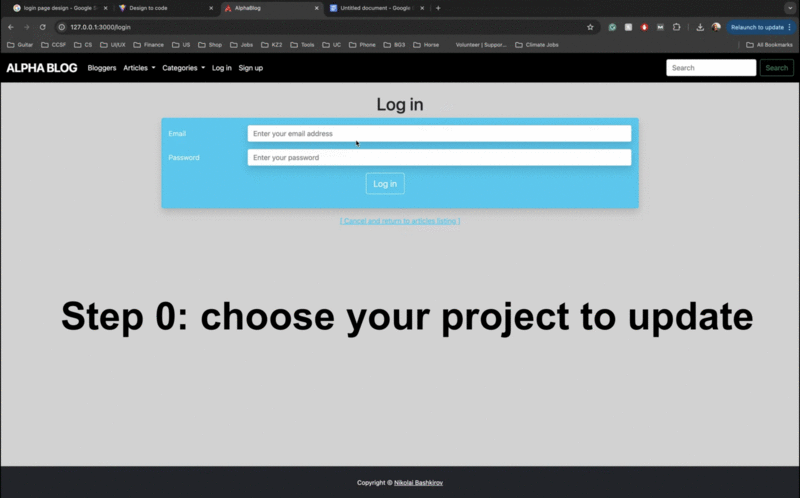
A React application that converts design images into code. Users upload an image, and the app processes it using the OpenAI API and Greptile API to generate the corresponding React components.
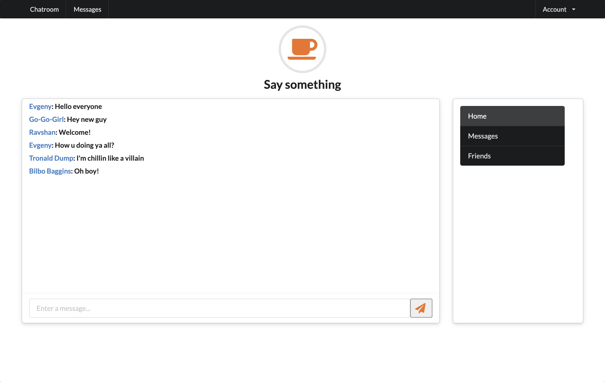
A real-time chat application featuring live message broadcasting via WebSockets (ActionCable). I experimented with Semantic UI for the frontend and gained hands-on experience managing Redis for real-time data.
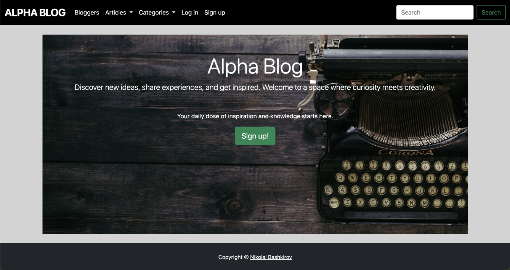
A full-featured blogging platform built to master the Rails MVC framework. Features include a custom authentication system, CRUD operations, and admin privileges.
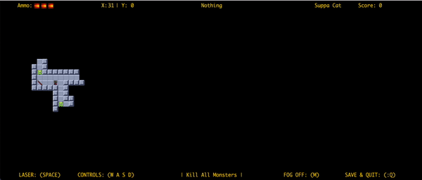
A 2D tile-based world exploration engine. Features a procedural generation algorithm to create random, fully connected dungeons. Includes save/load functionality, animation, and sound.
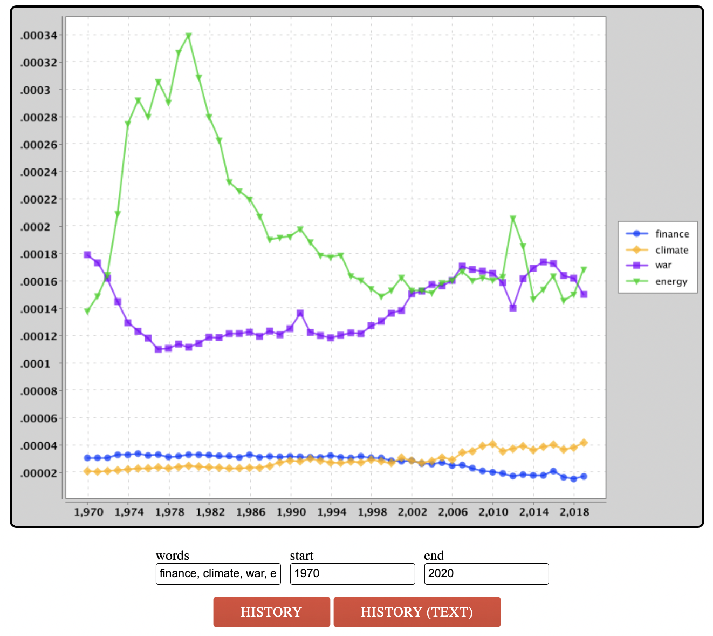
A browser-based tool for exploring the history of English word usage (1470-present). Involved building custom data structures to efficiently handle large datasets (Time Series) and graph algorithms.
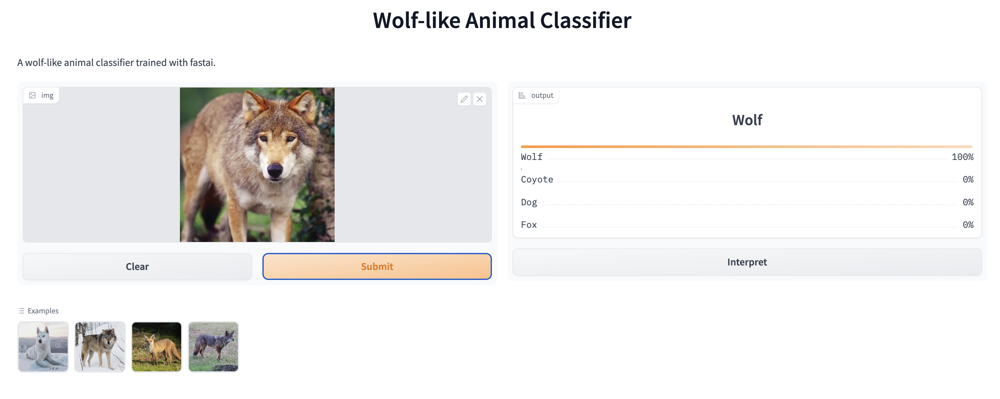
An AI-powered web app that identifies whether a canine in a photo is a Wolf, Coyote, Dog, or Fox. An introduction to neural networks, model training, and data cleaning.
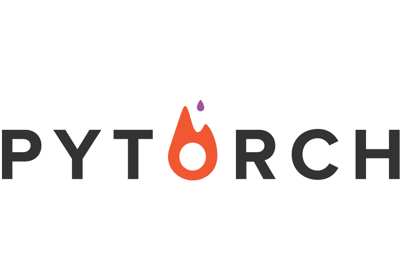
Collaborated with a team to identify and fix a version compatibility bug in the PyTorch codebase. This required navigating a massive codebase and strict adherence to contribution guidelines.
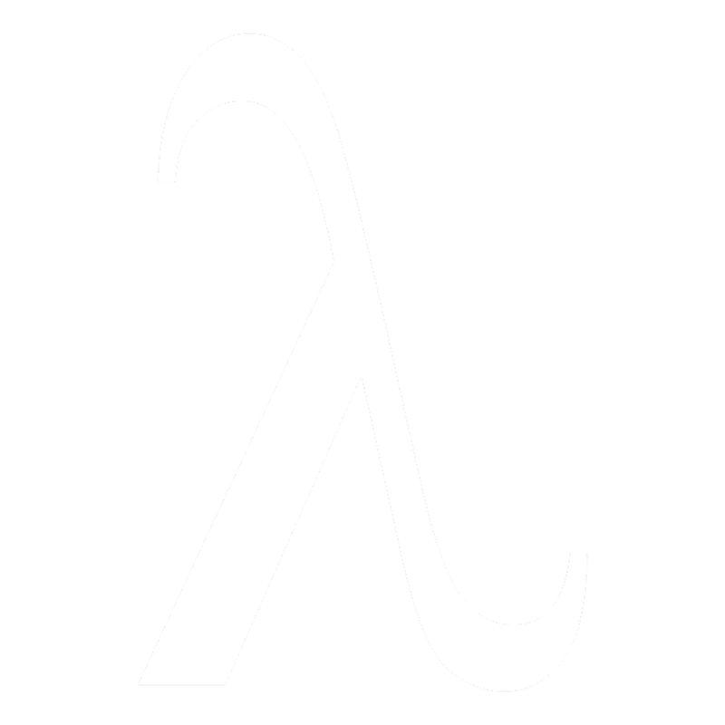
Built an interpreter for a subset of the Scheme programming language. Implemented evaluation/application cycles, special forms, and tokenization, deepening my understanding of how languages function.
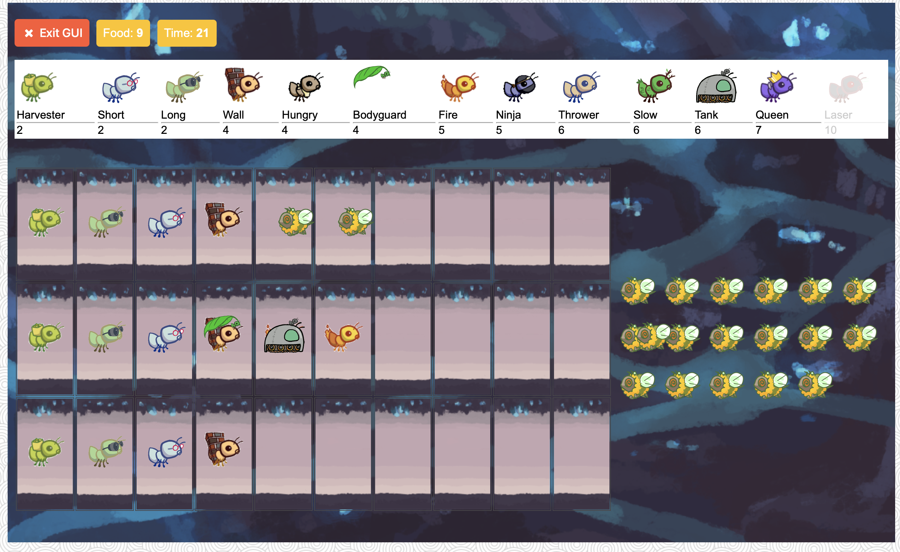
A tower defense game inspired by Plants vs. Zombies. Heavily focused on Object-Oriented Programming, inheritance, and game logic (turn orders, resource costs).
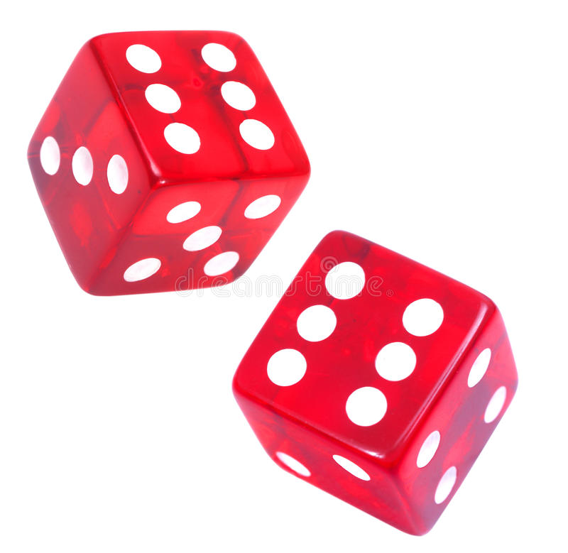
A dice simulator game with various playing strategies. Involved implementing complex game rules, control statements, higher-order functions, and designing an AI opponent.
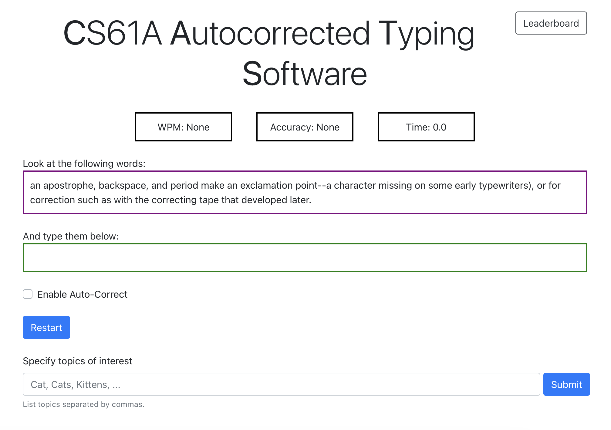
A typing speed test and autocorrect application. Focused on string manipulation, recursion, and file I/O to measure typing metrics and suggest corrections.
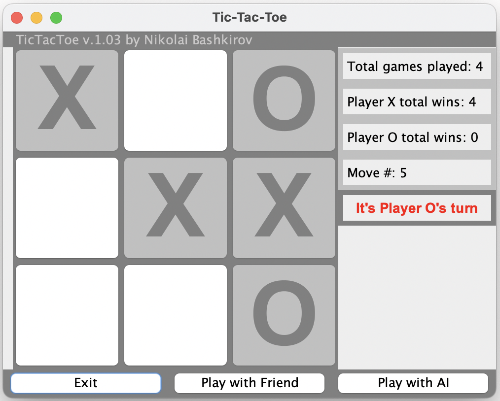
My first Java application with a GUI. Learned about event listeners, buttons, and basic game logic implementation.